本篇目录
18. 大模型为什么会出现幻觉？怎么缓解？
👔面试官：来讲讲大模型为什么会出现幻觉？怎么缓解？
🙋♂️我：幻觉就是模型胡说八道嘛，主要是训练数据有错误，所以模型学错了。缓解办法是用 RAG 加上外部知识库。
👔面试官：……「训练数据有错误」？那如果训练数据 100% 正确，模型就不会幻觉了吗？再说，RAG 是工程方案，但你现在让我从「模型本身」角度讲幻觉的根因，不是让你讲 RAG 系统。
🙋♂️我：哦哦，那可能是模型的概率采样有随机性，所以会乱选词？
👔面试官：那把 Temperature 调到 0 是不是就不会幻觉了？为什么很多 LLM 在 Temperature=0 的时候也会一本正经地胡说八道？这个根因你能讲出来吗？
🙋♂️我：呃……不太清楚。
👔面试官：我再换个角度问你。同一个事实问题，比如「鲁迅是谁的笔名」，模型有时候答对、有时候答错。这两次答案对应模型概率分布的什么不同？模型对「自己不知道的事」内部有没有信号？为什么模型不会主动说「我不知道」？这些都搞清楚了，再来谈缓解方案。
这一通追问下来才发现，「幻觉」根本不是「模型乱说」这一层能糊弄过去的。它的根源在 LLM 是概率续写器不是数据库，缓解也得训练、推理、系统三层一起上，少哪层都不行。
💡 简要回答
我理解大模型的幻觉本质是：模型生成了听起来很合理但实际是错的内容，这是 LLM 的固有缺陷，不是某个 bug。
幻觉的根因可以归到三个层面。
第一是训练数据层面：互联网语料本身就有错误、矛盾、过时的信息，模型把这些都「学进去」当作事实记忆。
第二是生成机制层面：LLM 本质是「按概率续写下一个 token」，不是「查询知识库」。模型对「自己知不知道某件事」没有显式信号，碰到不熟悉的问题，会按训练时见过的相似上下文「编一个看起来合理的答案」。这就是为什么 Temperature=0 也会幻觉，因为概率最高的那条路径本身就是错的。
第三是对齐目标层面：SFT 和 RLHF 训练时，「自信地回答」往往比「我不知道」得分更高，模型被无形中训练成了「不会拒答」。
幻觉分三类：事实性幻觉（编造不存在的事实，把人物事件张冠李戴）、推理性幻觉（推理链条错乱、前后矛盾）、上下文不一致（违背用户给的明确条件）。
缓解方案要分三层组合用。
训练层：对齐数据里专门加入「不知道就说不知道」的样例，做校准（Calibration）训练，让模型学会拒答。
推理层：让模型先做必要的分步分析再答（最终可以只展示简要依据）、Temperature 调低减少随机偏差、Self-Consistency 多次采样投票（错误答案不一定容易收敛）、约束解码（限制只能输出特定 vocabulary）。
系统层：RAG 接入外部知识库（让模型「看着资料答」而不是「凭记忆答」）、答案后处理核查、强制带引用来源。
最关键的认知是，幻觉不可能完全消除，因为它是 LLM 概率生成机制的固有副产物。工程上的目标是「降低发生率 + 让用户能识别」，不是「彻底消灭」。
📝 详细解析
幻觉到底是什么？为什么 LLM 必然会幻觉
要讲清楚幻觉，得先把它的定义说精确。学术界对 LLM 幻觉的定义是：
模型生成了与训练事实、用户输入、或者已知世界不一致的内容，但语言上看起来很流畅合理。
关键的两个特征：第一，内容错；第二，听起来对。如果只是错但一眼看出来错（比如语法错乱），那是普通的生成质量问题，不算幻觉。幻觉特别指那种「读起来很顺、引用看起来很专业、但仔细查证发现是编的」的输出。
举几个真实的例子：
- 让 ChatGPT 推荐一本书，它给出书名「《时间之河》by 王小波」，听起来像那么回事，但王小波从没写过这本书
- 让模型解释「2026 年北京冬奥会有哪些项目」，模型一本正经列出十几项，但 2026 年根本没有冬奥会
- 让模型写一篇医学综述，文章里引用了「Smith et al., 2018」这个文献，去 PubMed 查根本不存在
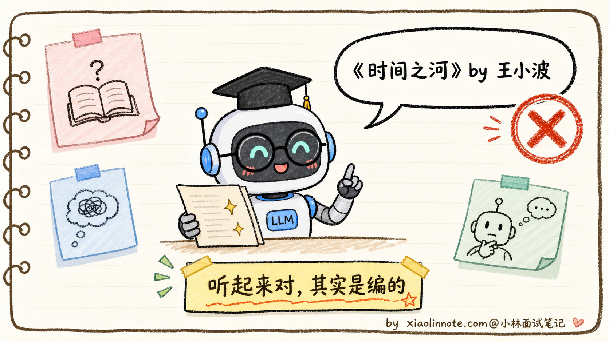
要理解为什么 LLM 会幻觉，得记住一句关键的话：模型不是数据库。
数据库的工作模式是「输入查询 -> 返回精确匹配的记录 -> 找不到就明确报错」。LLM 不是这样，它的工作模式是「输入上下文 -> 按概率续写最可能的下一个 token -> 一直续写直到结束」。模型从来没有「查询失败」这个状态，它永远会输出点什么，因为它的全部使命就是「续写」。
这是幻觉的元根源。再往下，可以拆成三个具体的成因层面。
根因一：训练数据本身就有错
最容易理解的一层是训练数据问题。
LLM 的训练数据来自互联网（Common Crawl）+ 各种公开语料 + 书籍 + 代码仓库。数据量是 TB 级别的，里面什么货色都有：
- 维基百科里有过时的、错误的、被破坏的版本
- 新闻里有谣言、虚假报道、带立场的扭曲叙述
- 论坛、博客、社交媒体里满是民科、阴谋论、错误的常识
- 不同来源之间互相矛盾（同一个事件的不同说法、同一个数据的不同版本）
- 时间过期的信息（2020 年的「今年是 2020 年」、十年前的「最新研究」）
模型在预训练时把这些全都学进了参数里，没有「真假区分」机制。等推理时它说出来的，可能就是某个 2015 年错误论坛帖子的回声。
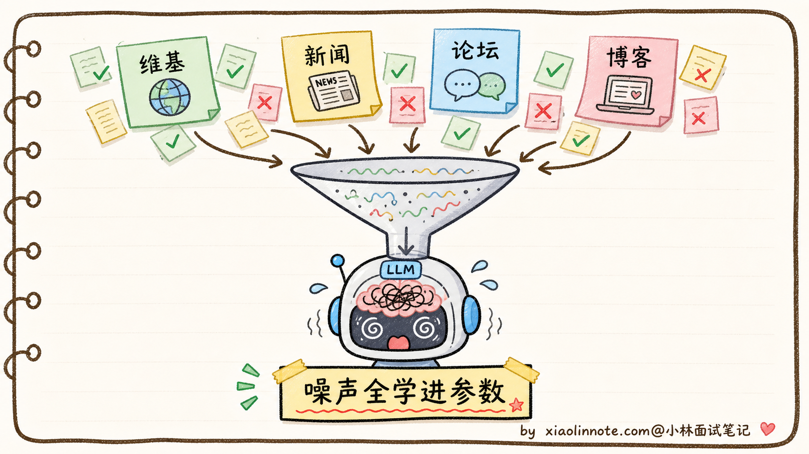
但要注意，训练数据问题只是冰山一角。即使数据 100% 正确干净，模型还是会幻觉。下面是更深层的根因。
根因二：生成机制是「续写」不是「查询」
这是幻觉最深的根因，也是面试里最容易问倒人的地方。
LLM 的本质是 next-token prediction：给一段上下文，输出下一个 token 是什么的概率分布，按某种解码策略选一个 token，拼到上下文后面，循环直到结束。
这里有一个被很多人忽略的事实：模型对「自己知不知道某件事」根本没有显式信号。
你问「鲁迅是谁的笔名？」，模型的处理流程不是「查一下知识库 -> 找到周树人 -> 输出周树人」，而是「在我的参数里，给定『鲁迅是谁的笔名？』这个上下文，下一个 token 最高概率是什么？」如果训练时模型见过很多次「鲁迅是周树人的笔名」，那「周」这个 token 的概率会很高，回答正确；如果模型对这个事实记得不牢（比如训练时只见过 1-2 次），「周」的概率可能没那么高，模型会按概率从分布里挑一个看起来合理的名字续上去，得出「鲁迅是茅盾的笔名」之类的错误答案。
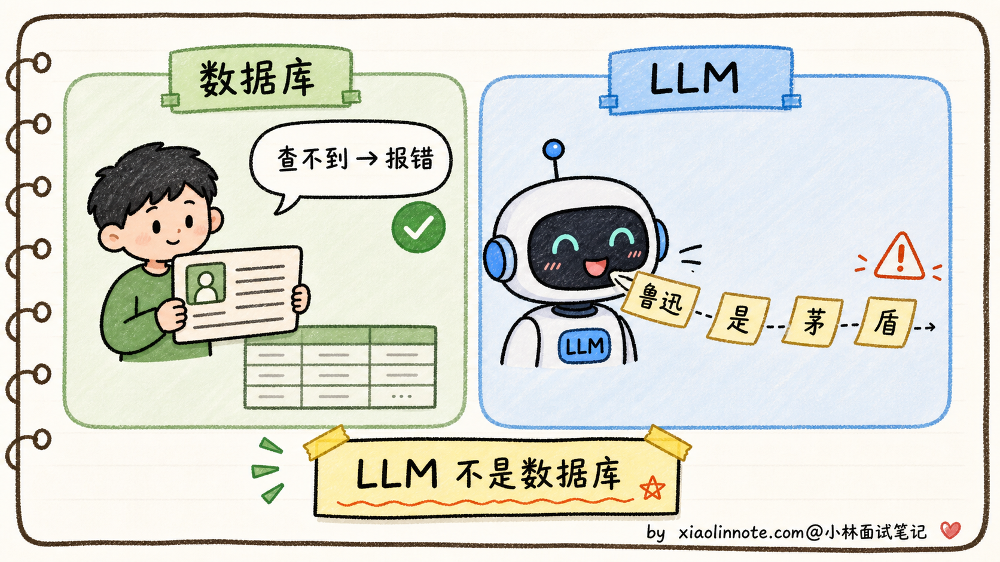
模型这种「永远会输出点什么」的特性带来一个反直觉的结果：Temperature=0 也会幻觉。
为什么？因为 Temperature=0 等价于贪心解码，每步选概率最高的 token。但「概率最高的 token」不等于「正确的 token」，只是「按训练数据统计、最可能出现在这个上下文之后的 token」。如果模型对某个事实记忆模糊，它脑中的概率分布可能是「茅 35% / 周 32% / 鲁 18% / 巴 15%」，Temperature=0 会铁定选「茅」，输出「鲁迅是茅盾的笔名」，错得很自信。
这就是为什么把温度调低不能根除幻觉。温度只能减少「同一个错误重复出现的随机性」，不能修正「错误本身」。模型记错了就是记错了，温度调低反而让错误答案更稳定地输出。
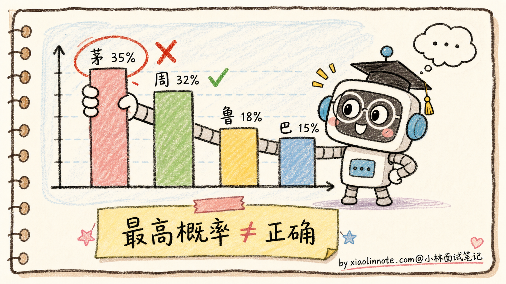
更进一步的是「参数化知识 vs 检索式知识」的对比。
LLM 的所有事实记忆都「编码在 1700 亿个参数里」（参数化知识），这种存储方式是：
- 模糊的：知识不是 key-value 存的，是分布式编码在权重里的，记得多准取决于训练时见过多少次
- 不可检索的：模型自己不知道某条知识在哪几个权重里
- 不可验证的：模型输出一个事实时，没法回过头标「这条来自训练数据的某段」
而 RAG 这种检索式知识就完全不同：每个事实有明确出处，找到了就找到了，找不到就明确返回空。这是为什么 RAG 能显著缓解幻觉，它把「模糊的参数化记忆」换成了「精确的检索结果」。
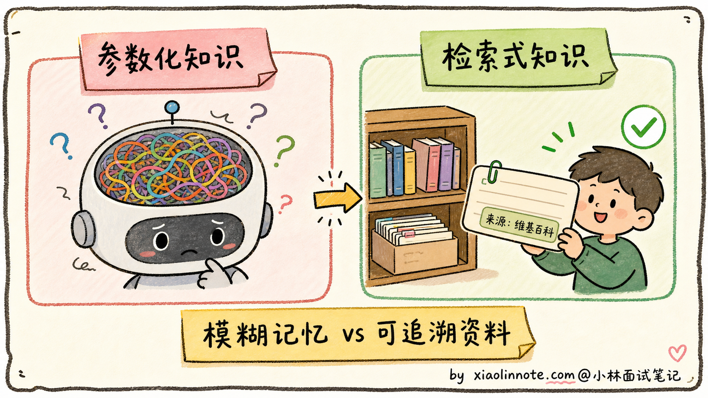
根因三：对齐目标的副作用
第三层根因更隐蔽：对齐训练（SFT + RLHF）反而会鼓励模型「自信地回答」，加剧幻觉。
什么意思？SFT 的训练数据是（指令，期望回答）对，但绝大多数标注员写期望回答时，都会写「自信、详细、专业」的回答，很少写「我不知道」。结果是模型学到了「碰到问题就要给出详细回答」的行为模式，根本没学过「碰到不会的就拒答」。
到了 RLHF 阶段更糟。人类标注员对回答打偏好排名时，「详细、自信、专业」的回答几乎永远比「我不确定」得分高，哪怕详细回答其实是错的。因为人类标注员自己也不一定知道答案对不对，他们打分的依据更多是「读起来像不像专家」。
奖励模型学到的就是「自信 = 高分，谨慎 = 低分」。PPO 把这个偏好放大到主模型，最终的模型变成「永远自信、永远不拒答」，于是幻觉率反而上升。
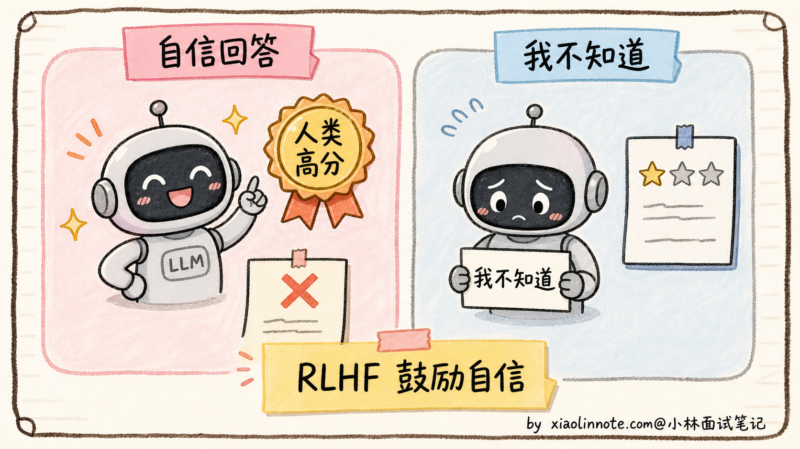
Anthropic 在 2023 年的论文 Language Models (Mostly) Know What They Know 里专门研究过这个问题，提出了「Calibrated Refusal（校准的拒答）」概念：让模型在对齐训练时学习「该说不知道的时候就说不知道」，让它的「自信度」和「实际正确率」对齐。至于 Claude 具体用了哪些训练配方，公开资料不会把内部细节讲完，所以面试里可以说「Claude 这类模型体现了更强的拒答校准倾向」，不要断言某个产品一定就是某一套论文流程的直接结果。
到这里，三个根因层面都讲完了：训练数据有噪声、生成机制是「续写不是查询」、对齐目标鼓励「不拒答」。下面看看具体能产生哪些类型的幻觉。
三类幻觉的典型表现
学术界一般把 LLM 幻觉分成三大类：
1. 事实性幻觉（Factual Hallucination）
模型编造不存在的事实，或把已知事实张冠李戴。最常见、最容易被识破：
- 编造不存在的人物（「李白曾担任唐朝丞相」）
- 编造不存在的论文（「Zhang et al. 2019 在 Nature 发表」）
- 时间错误（把发生在 2010 年的事说成 2015 年）
- 地理错误（「乌克兰的首都是莫斯科」）
2. 推理性幻觉（Reasoning Hallucination）
事实层面没问题，但推理过程错乱、前后矛盾、逻辑跳跃。在数学题、代码题里尤其常见：
- 数学题前面算对了，后面突然算错
- 代码生成里前半段定义了变量 x，后半段引用了从来没定义过的 y
- 推理链断了一步，最后结论强行得出
3. 上下文不一致（Faithfulness Hallucination）
最隐蔽的一类，不违反客观事实，但违反用户在 Prompt 里给的明确条件：
- 用户说「我已经吃饱了」，模型还推荐你去吃饭
- 用户给了一段文档说「请只根据下面的资料回答」，模型答的是它自己脑袋里的知识，不是文档里的
- 系统 Prompt 写了「不要泄露内部信息」，模型还是把内部 Prompt 复述了出来
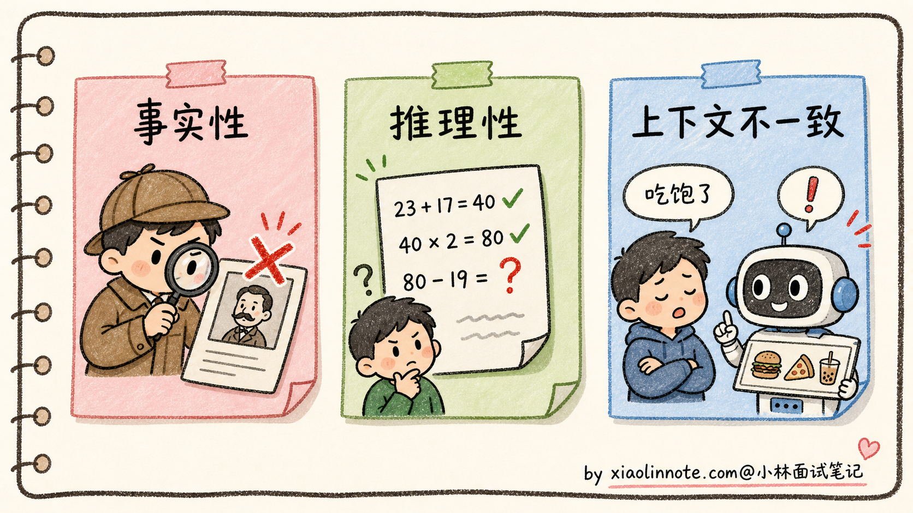
理解了根因和分类，缓解方案就有了对症下药的落点。下面分三层来看。
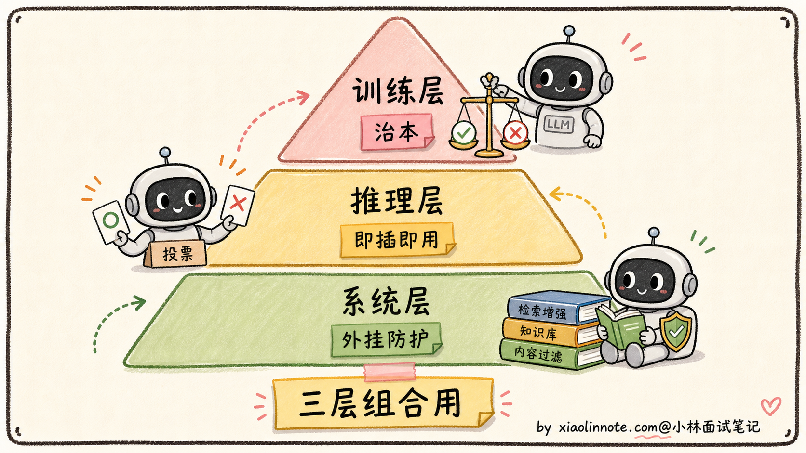
缓解方案：训练层
最根本的缓解办法是在训练阶段就教会模型「不知道就说不知道」。具体有几种做法：
1. 在 SFT 数据里加入大量「拒答样例」
主动给训练数据里塞「我不确定」「这个我没把握」「建议你查一下专业资料」这种回答，让模型学到「拒答也是合格回答」。Anthropic 在 Claude 的训练里大量这么做。
2. 校准（Calibration）训练
用专门的偏好数据，让标注员对「正确且自信」「错误但谨慎」「错误且自信」打分，让奖励模型学到「错误且自信」要严厉扣分。这样训出来的模型会主动避免「自信地说错话」。
3. 用奖励模型筛掉幻觉回答
收集模型生成的回答，用第二个模型（或者人工）去事实核查，把出现幻觉的回答标记为低分，作为对齐训练的负样本。这是 Anthropic 的 Constitutional AI 流程的一部分。
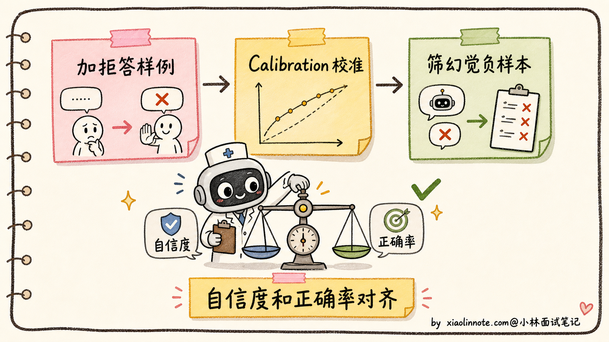
训练层缓解的优点是治本，但代价是训练成本高，且效果上限受训练数据质量限制。所以工程上还需要推理层和系统层的辅助。
缓解方案：推理层
推理层缓解不需要改模型，只需要在推理时调整解码行为或提示工程：
1. CoT（链式思考）暴露推理错误
让模型先做分步分析，再给出最终结论。这样模型更不容易跳步，最终答案错的时候也更容易通过简要依据追溯问题。对外产品里不一定展示完整 CoT，可以展示关键推理步骤或检查结果。CoT 对推理性幻觉有帮助，但不能保证一定正确。
2. Temperature 调低
虽然前面说过 Temperature=0 不能根除幻觉，但调低能减少「随机偏差」带来的幻觉（即「模型本来知道，但因为随机抽到了低概率的错答案」这种情况）。对事实性问答用 Temperature=0~0.3 是工程标配。
3. Self-Consistency 多次采样投票
对同一个问题，用 Temperature=0.7 采样 N 次（典型 N=5~10），最后取多数投票。逻辑是「正确答案更容易通过多种推理路径得到，错误答案相对更分散」。在数学推理任务上经常能提升准确率，但提升幅度取决于模型、题目和采样次数，不要把 5-15 个百分点当成固定收益。
4. 约束解码（Constrained Decoding）
如果输出格式有严格约束（比如 JSON、SQL、特定 schema），用约束解码限制模型每步只能从合法 vocabulary 里选 token。这样能根除「输出格式错误」这一类幻觉。vLLM、TGI 等推理框架都支持。
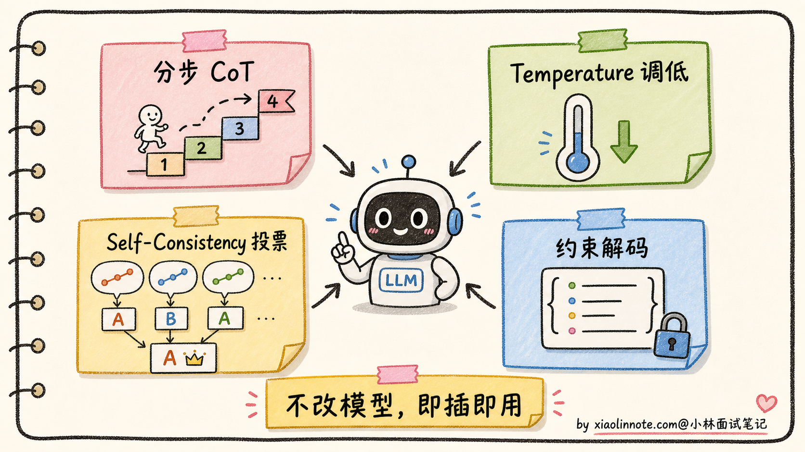
推理层缓解的优点是不改模型、可以即插即用，缺点是上限有限，对「模型记忆模糊」这种根本问题没办法。
缓解方案：系统层
系统层缓解是最工程化的方案，把 LLM 当成「会犯错的组件」，外面加防护栏：
1. RAG：让模型「看着资料答」
最有效的系统层方案之一。在生成前先去外部知识库检索相关资料，把资料拼进 Prompt，让模型基于资料回答。这样把「靠模糊参数记忆」换成了「靠可追溯的检索结果」，通常能显著降低事实性幻觉。但它不是固定能下降一个数量级，效果取决于检索召回、文档质量、Rerank、Prompt 约束和引用校验。RAG 的具体工程细节非常多（Chunking、向量检索、Rerank、Prompt 设计），是另一个独立的大话题，本题不展开。
2. 后处理事实核查（Fact-Checking）
模型输出后，用另一个 LLM 或者检索系统去核查里面提到的事实声明。比如模型说「Smith et al. 2018 在 Nature 发表了 X」，后处理系统去 PubMed 查这篇论文是否存在。如果核查不过，把这部分内容标红或删掉。
3. 强制带引用来源
在 Prompt 里要求模型每条事实声明后面跟引用编号，对应到检索系统返回的具体文档。用户可以点开引用查证，这样即使有幻觉，用户也能识别出来。Perplexity AI 就是这么做的。
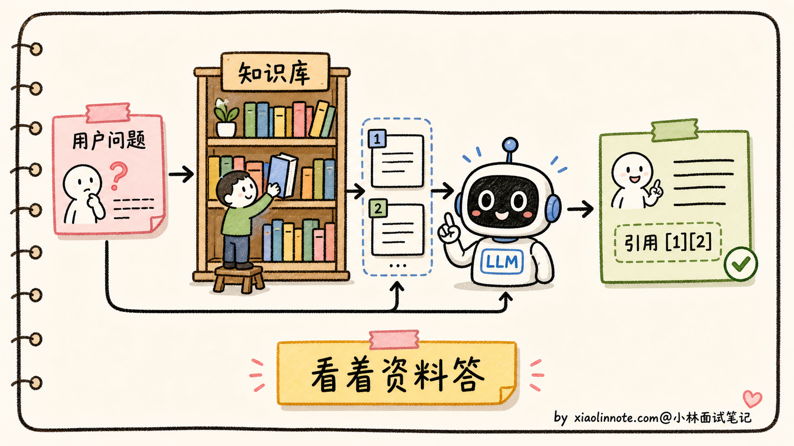
系统层缓解的优点是工程上最有效、可观测、可追溯，缺点是引入了额外的延迟和系统复杂度。但对企业级应用来说，几乎是必选项。
工程实践：为什么幻觉不可能完全消除
最后讲一个面试里很容易加分的点：幻觉永远不会被「彻底消灭」。
原因回到最开始那句话，LLM 的本质是按概率续写下一个 token，这个机制天然就带着「会编」的可能性。无论你再怎么对齐、怎么 RAG、怎么核查，只要模型还是按概率生成的，就一定有概率生成错误内容。
工程上现实的目标是：
- 降低发生率（从 30% 降到 5% 是巨大的胜利）
- 让用户能识别（带引用、加可信度标记、对不确定回答主动声明）
- 限定使用场景（高风险场景如医疗、法律必须有人类把关）
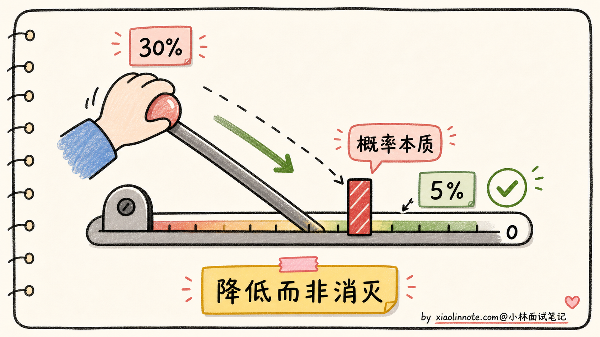
讲到这里，能在面试里说出「幻觉不可能消除，工程目标是降低发生率 + 让用户识别」这句话，就比绝大多数候选人深刻一个层次了。这个认知背后是「LLM 的概率本质」，是面试官想听到的。
🎯 面试总结
回到开头那段对话，问到大模型为什么会出现幻觉、怎么缓解，最重要的是先讲清楚幻觉的定义和元根源。幻觉不是简单的「模型出错」，而是「生成了流畅合理但实际错误的内容」。元根源是 LLM 不是数据库，是续写器，它的全部使命就是按概率输出下一个 token，没有「查询失败」这个状态，永远会输出点什么。这一句先讲到，就把幻觉的本质点出来了。
接下来讲三个具体根因。训练数据本身有错（互联网语料里有噪声、矛盾、过时信息）；生成机制是「续写不是查询」（参数化记忆模糊，所以 Temperature=0 也会幻觉）；对齐目标的副作用（RLHF 训练时人类标注偏好「自信回答」，模型被无形训练成「不会拒答」）。这三层根因层层递进，第二层和第三层是面试里能加分的关键，能讲出来比一般候选人深刻。
然后讲缓解方案分三层组合用。训练层（拒答数据增强、Calibration 校准、奖励模型筛幻觉），推理层（分步分析、温度调低、Self-Consistency、约束解码），系统层（RAG、事实核查、强制带引用）。每一层都不是银弹，工业级应用通常组合用。这里不要硬说某个闭源模型具体用了哪几招，公开资料没写的就保持谨慎。
最关键的一句话是：幻觉不可能完全消除，因为它是 LLM 概率生成机制的固有产物。工程目标是「降低发生率 + 让用户能识别」，不是「彻底消灭」。能讲到这一层，面试官就知道你不是在背工具，是真的理解 LLM 的本质。
对了，大模型面试题会在「公众号@小林面试笔记题」持续更新，林友们赶紧关注起来，别错过最新干货哦！